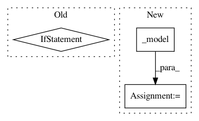

0cceb4f21605ba55c6b2f0eb0052b297d3cff6d1,art/estimators/classification/keras.py,KerasClassifier,predict,#KerasClassifier#Any#Any#Any#,488
Before Change
:return: Array of predictions of shape `(nb_inputs, nb_classes)`.
// pylint: disable=E0401
if self.is_tensorflow:
import tensorflow.keras.backend as k
else:
import keras.backend as k
from art.config import ART_NUMPY_DTYPE
k.set_learning_phase(int(training_mode))
After Change
// Run predictions with batching
if training_mode:
predictions = self._model(x_preprocessed, training=training_mode)
else:
predictions = self._model.predict(x_preprocessed, batch_size=batch_size)
// Apply postprocessing
In pattern: SUPERPATTERN
Frequency: 4
Non-data size: 3
Instances
Project Name: IBM/adversarial-robustness-toolbox
Commit Name: 0cceb4f21605ba55c6b2f0eb0052b297d3cff6d1
Time: 2021-02-05
Author: beat.buesser@ie.ibm.com
File Name: art/estimators/classification/keras.py
Class Name: KerasClassifier
Method Name: predict
Project Name: IBM/adversarial-robustness-toolbox
Commit Name: 64764718080b11c8fb91df34c12e0ce8ac54aa4e
Time: 2018-05-15
Author: M.N.Tran@ibm.com
File Name: art/classifiers/pytorch.py
Class Name: PyTorchClassifier
Method Name: fit
Project Name: IBM/adversarial-robustness-toolbox
Commit Name: 86aca57545cfe312151cc35528035cd9c0aafe2d
Time: 2018-05-17
Author: M.N.Tran@ibm.com
File Name: art/classifiers/pytorch.py
Class Name: PyTorchClassifier
Method Name: class_gradient
Project Name: IBM/adversarial-robustness-toolbox
Commit Name: 8acacf7ecdddd031366f2c044bdc6ce5ba8e5a62
Time: 2018-10-04
Author: Maria-Irina.Nicolae@ibm.com
File Name: art/classifiers/mxnet.py
Class Name: MXTextClassifier
Method Name: predict_from_embedding